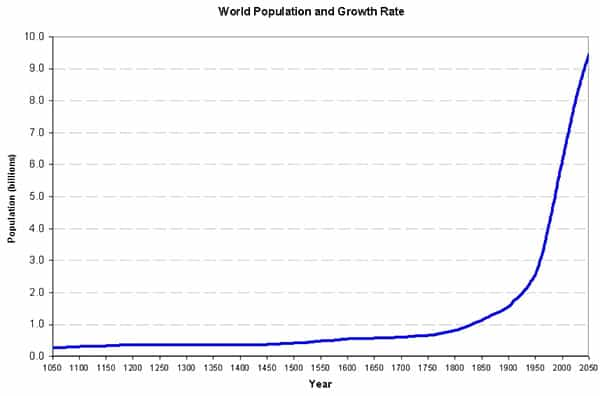

André is a young European who left his decaying country in 2012 for greener pastures. He enjoys exploring subterranean places, reading about a host of interconnected topics, and yearns for Tradition.


Western birth rates have been falling below replacement rates since the 1970-1980s. For more than forty years, Westerners in general and Whites in particular failed to produce enough children to maintain their own population. In all likelihood, this demographic collapse stems from an agenda of the globalist elite. Feminism, sex wars, the breakup of the family unit, promotion of childless “alternative” lifestyles, focus on consumerism and career instead of home building… All these trends have long been supported by the elite through its media and “culture,” and all lead people to sterility.
So far this agenda has been successful. Europe is in a demographic free-fall, childless German Chancellor Gerhard Schröder passed the power to childless German Chancellor Angela Merkel—and a titled Rabbi claims Europeans should accept their own disappearance. North America follows the same course. Interestingly, China, Japan, and even Thailand are undergoing what has been euphemistically called a “demographic contraction.” A friend of mine who recently toured the last of these countries told me that many Thai women seek an income supplement by casually selling their body to tourists—which is handy for Western travelers but disastrous for Thai men who want to run a family.
White peoples are the most directly affected by the elite agenda. Only we are constantly assaulted and invaded by non-whites “minorities”—who are actually more numerous than whites on a global scale—bombarded with adverse propaganda for anti-man hostility and race mixing, yet on a global scale we are not the only ones targeted. North Africans, for example are invaded by sub-Saharan blacks and Chinese, and their women either have much less children than their grandmothers or get notched by blacks who impregnate them quick and run away. If whites disappear, North Africans will too.
Because of what the current depopulation agenda is doing to us, we may be tempted to perceive depopulation as intrinsically evil. Yet, just as with managerialism, the current elite and agenda are not a fatality, and we could have another managerialism as well as another “population regulation” agenda without the harm of today. In my opinion, such an agenda would be justified—the current agenda and global elite methods are evil but not all possible versions of demographic vigilance are.

Before Big Corp, Big State, McChurches and Big Pharma came Big Population. For most recorded history, the whole world went through with less than 500 million human people, and most of these were either peasants or pastors. Cities were small, meat was cheap—sparse population density means lots of free land to graze flocks—and although the world was full of economic growth potentialities, these were deemed less important than living according to a higher Law. Then came modernity, featuring both the discovery of uncharted big lands and greedy appetites. It was not such a problem then, as there were so much possibility for growth.
As the appetites grew, reflections on economics boomed as well, and many “important” people started to resent the medieval limitations on trade. In France, the eighteenth century physiocratic school laid a lot of the ground Adam Smith built upon. One of the physiocrates, Victor Riquetti de Mirabeau, published between 1756 and 1762 a long-winded essay, L’ami des hommes (“The Friend of Men”), where he argued that wealth lied in working force and consequently that governments should pursue pro-birth policies among agricultural workers.
Behind the “look at all this potential growth!” pose, Mirabeau’s essay showed a milestone on what later authors dubbed the reign of quantity—less land for animals, more space restricted to wheat and potatoes, more proletarians toiling the soil for someone else. Interestingly, Mirabeau insinuated that this numerous workforce could also be mobilized for war, thus tossing aside his own caste’s vocation and replacing the nobility of the sword with future bloodbaths. Although he devoted a lot of written space on moralizing his bidding, for example by idolizing the agricultural life or by confusing between more people and better people or life conditions, Mirabeau couldn’t help that his perspective led to consider workers and work as abstract commodities, void of qualitative value.
Then came the Industrial Revolution. Perfected along the eighteenth century, the steam engine became effective enough to turn into a powerhouse with a variety of uses, mostly in transportation and factory production. At the dawn of the nineteenth century, wealthy bankers were able to fund massive industrial projects: bigger and bigger factories opened their doors, while big steam-powered boats and trains sent the produced goods around the whole world. Of course, many manual workers were needed to run all these machines, and those whom Mirabeau wanted to see toil the land toiled at steel engines instead.
During the nineteenth century, the growth of factories was correlated with a demographic boom: Great Britain, then the most industrialized and wealthy country of the world, had its population jumping from roughly 7.750.000 in 1801 to 30.070.000 one century after—a fourfold increase in population—while Germans went to 22.000.000 to 56.000.000 during the same time lapse. People grew, and the economy did, too, as factory workers saw their standards of living increase during most of the century. The nineteenth century really looked like modernity was working, fulfilling its promises of “progress.”
The industrial and geopolitical whirlwind of this convoluted time made people oblivious to an important thing: before the Industrial Revolution, European countries were self-feeding. National agriculture was enough to guarantee no one would starve. After the factory and population boom, however, not so sure: the agriculture actually went backwards because of rural exodus and a widespread despise of the peasant, deemed much less fashionable than the factory worker; and the proletarian masses actually depended from international trade for the outlets and food imports guaranteeing their subsistence. If the “delicate fabric of international finance and commercial exchange” got hampered, the factory workers and urban white collars would suffer.
This is exactly what happened with the First World War. The trade system was shattered into pieces by the reallocation of wealth to war effort, Allied blockade and sheer destruction of people and capital. In the aftermath of the war, millions of men found themselves jobless and existentially threatened.
Crippled by war-losses and cursed by persistent internecine rivalries, Europe has not recovered its pre-war industrial prosperity. But unless it does so recover, a large proportion of Europe’s urban population simply cannot make a living and will ultimately be doomed to disappear by death, emigration, or a return to the soil…
[T]he fate of Europe’s tens of millions of urban workers is absolutely bound up with the fate of Europe’s industrial system. It was this system which called them into being and which alone permits their continued existence. Should Europe’s industry decline, the urban masses will inevitably wither; should it collapse, they will quickly vanish away. (Lothrop Stoddard, Social Classes in Post-War Europe, 1925, pp.38 and 45-6)
Timid solutions, then, solve one part of the problem only to worsen it elsewhere. From the 20s onwards, European agriculture got “modernized” under the thumb of State managers and crony capitalists, intensive farming improved crop productivity and dropped food prices. Did it allow for better feeding? For sure, there is more food on the market. This food, though, is loaded with gluten, refined sugars, trans fats and other health-destroying components. Most peasants lost their lands, as they couldn’t rival against large scale holdings and were consequently forced to sell theirs, and most of them now have no employment anyway.
Likewise, economies of scale may allow to produce more cheaply and for a wider number of people, but those can only obtain by proletarizing most people, forcing them to slave work at McDonalds or Walmart instead of owning their means of subsistence, and the shattering of industry inside Western countries only worsened the situation.
If the primary and secondary sector need less people, what do we do with all these who were born thanks to the numerous employments these sectors brought on? Even worse, when non-Western countries want to undergo the same modern process for the sake of “development” and let their demographics loose, what do we gain beyond more pollution and potential substitute for white peoples?
Retrospectively, the blind growth of the past two centuries gave us a cumbersome inheritance. Both inside the West and outside, many people have become useless in a world where the “real” production sectors do barely offer any worthy, income-yielding employment—and where so many of us were born in an urban, pampered environment, shielded from any contact with ploughs and wrenches. Even if we forced Big Corp to un-automatize some processes and pushed an agrarian reform giving back the lands to small-scale owners instead of Monsanto soldouts, there would still be far too many people around. Imagine for a second that the managerial State and the self-serving, mostly parasitic service industry recede: that would be good news for real producers… but what about the millions of petty officials, bureaucrats, and even tertiary employees who’d get sidelined?
Whatever the solution, it seems that a world where the West is great and the middle class thriving again needs to hurt the undeserved livelihood of many parasites and raise the price of food and goods. Even if we manage to reduce the margins of the wealthy globalists, renouncing to scale economies by breaking down big factories and holdings will necessarily raise the prices of what they sell. You cannot both buy cheap frankenfood—instead of going to the farmers’ market—and support independent producers.
To put it more bluntly, I would appreciate far more a world where worthy Westerners are independent middle class or above, where women are women, where ideas are free, and where we can eat fine meat without breaking the bank, instead of a bloated planet full of two-digits IQs, masses of idiots addicted to tittytainment, and a cutting-throat competition for even unpaid jobs.
What I would object to the elite’s agenda, then, is not depopulation per se but who is targeted and how. It is possible to practice birth control without violence, to make a careful and considerate use of negative eugenics on a legitimate segment of the population, such as natural born criminals, very low IQs, or peoples who are irresponsible enough to breed dozens of children without the least resource planning—just look at Africa. It is also possible to direct technological development for something else than pure bucks-hunting, and this would bring back many, many jobs, thus allowing millions to go back from the dreadful status of chronic employment-seeker to stable producer and pater familias.
Alas, the globalists tend to think otherwise. Pushing for world-scale managerialism through a network of global governance, they want to play God, control everything, micromanage the lives of most people and reduce almost everyone to the condition either of a prole—doing menial work for a small wage—or of a useless, do-nothing tittytainment addict. Instead of frankly putting forth the problem and accepting a democratic discussion, they have resorted to underhanded manipulation, pushing trends and issue that superficially seem unrelated but all result in making people unable to find a suitable partner or unwilling to reproduce. They also engaged in the most cynical cultural manipulations to wage a sex war, destroy the family unit, blast any trust between man and woman, and distorted the very “gender roles” normal peoples from all cultures always strove to realize. More profit, more individual atomization, more flexibility, more dependence from their power networks—such are the aims that the arrogant elite pursues at the same time than depopulation.
Moreover, their agenda seem to feature a part of Talmudic hatred against Christians and whites, for we are the first targeted and the hardest hit by an array of incredibly violent policies ranging from rewriting our history and pushing anti-white, anti-man hostility to downright mass invasion and population replacement. Other current targets, such as the North Africans or the South Asians, seem merely collateral damage on the side of what we are going through.
Population regulation can be a good thing, provided it is done carefully and with, if I might say, lawful—dharmic—discernment. The power-hungry, cynical, family- and culture-destroying, anti-Western civilization agenda pursued by the globalists is not.
Read Next: The End Goal Of Western Progressivism Is Depopulation